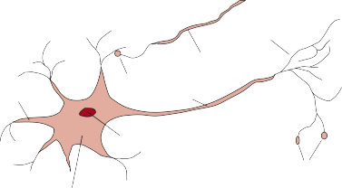
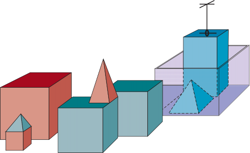

CHAPTER 1
INTRODUCTION
In which we try to explain why we consider artificial intelligence to be a subject most
worthy of study, and in which we try to decide what exactly it is, this being a good thing to
decide before embarking.
We call ourselves Homo sapiens—man the wise—because our intelligence is so important Intelligence
to us. For thousands of years, we have tried to understand how we think and act—that is,
how our brain, a mere handful of matter, can perceive, understand, predict, and manipulate a
world far larger and more complicated than itself. The field of artificial intelligence, or AI, Artificial intelligence
is concerned with not just understanding but also building intelligent entities—machines that
can compute how to act effectively and safely in a wide variety of novel situations.
Surveys regularly rank AI as one of the most interesting and fastest-growing fields, and it
is already generating over a trillion dollars a year in revenue. AI expert Kai-Fu Lee predicts
that its impact will be “more than anything in the history of mankind.” Moreover, the intel-
lectual frontiers of AI are wide open. Whereas a student of an older science such as physics
might feel that the best ideas have already been discovered by Galileo, Newton, Curie, Ein-
stein, and the rest, AI still has many openings for full-time masterminds.
AI currently encompasses a huge variety of subfields, ranging from the general (learning,
reasoning, perception, and so on) to the specific, such as playing chess, proving mathemat-
ical theorems, writing poetry, driving a car, or diagnosing diseases. AI is relevant to any
intellectual task; it is truly a universal field.
We have claimed that AI is interesting, but we have not said what it is. Historically, re-
searchers have pursued several different versions of AI. Some have defined intelligence in
terms of fidelity to human performance, while others prefer an abstract, formal definition of
intelligence called rationality—loosely speaking, doing the “right thing.” The subject matter Rationality
itself also varies: some consider intelligence to be a property of internal thought processes
and reasoning, while others focus on intelligent behavior, an external characterization.1
From these two dimensions—human vs. rational2 and thought vs. behavior—there are
four possible combinations, and there have been adherents and research programs for all
1 In the public eye, there is sometimes confusion between the terms “artificial intelligence” and “machine learn-
ing.” Machine learning is a subfield of AI that studies the ability to improve performance based on experience.
Some AI systems use machine learning methods to achieve competence, but some do not.
2 We are not suggesting that humans are “irrational” in the dictionary sense of “deprived of normal mental
clarity.” We are merely conceding that human decisions are not always mathematically perfect.
Turing test
Natural language
processing
Knowledge
representation
Automated
reasoning
Machine learning
Total Turing test
Computer vision
Robotics
Introspection
Psychological
experiment
Brain imaging
four. The methods used are necessarily different: the pursuit of human-like intelligence must
be in part an empirical science related to psychology, involving observations and hypotheses
about actual human behavior and thought processes; a rationalist approach, on the other hand,
involves a combination of mathematics and engineering, and connects to statistics, control
theory, and economics. The various groups have both disparaged and helped each other. Let
us look at the four approaches in more detail.
The Turing test, proposed by Alan Turing (1950), was designed as a thought experiment that
would sidestep the philosophical vagueness of the question “Can a machine think?” A com-
puter passes the test if a human interrogator, after posing some written questions, cannot tell
whether the written responses come from a person or from a computer. Chapter 28 discusses
the details of the test and whether a computer would really be intelligent if it passed. For
now, we note that programming a computer to pass a rigorously applied test provides plenty
to work on. The computer would need the following capabilities:
Turing viewed the physical simulation of a person as unnecessary to demonstrate intelligence.
However, other researchers have proposed a total Turing test, which requires interaction with
objects and people in the real world. To pass the total Turing test, a robot will need
These six disciplines compose most of AI. Yet AI researchers have devoted little effort to
passing the Turing test, believing that it is more important to study the underlying princi-
ples of intelligence. The quest for “artificial flight” succeeded when engineers and inventors
stopped imitating birds and started using wind tunnels and learning about aerodynamics.
Aeronautical engineering texts do not define the goal of their field as making “machines that
fly so exactly like pigeons that they can fool even other pigeons.”
To say that a program thinks like a human, we must know how humans think. We can learn
about human thought in three ways:
Once we have a sufficiently precise theory of the mind, it becomes possible to express the
theory as a computer program. If the program’s input–output behavior matches correspond-
ing human behavior, that is evidence that some of the program’s mechanisms could also be
operating in humans.
For example, Allen Newell and Herbert Simon, who developed GPS, the “General Prob-
lem Solver” (Newell and Simon, 1961), were not content merely to have their program solve
problems correctly. They were more concerned with comparing the sequence and timing of
its reasoning steps to those of human subjects solving the same problems. The interdisci-
plinary field of cognitive science brings together computer models from AI and experimental Cognitive science
techniques from psychology to construct precise and testable theories of the human mind.
Cognitive science is a fascinating field in itself, worthy of several textbooks and at least
one encyclopedia (Wilson and Keil, 1999). We will occasionally comment on similarities or
differences between AI techniques and human cognition. Real cognitive science, however, is
necessarily based on experimental investigation of actual humans or animals. We will leave
that for other books, as we assume the reader has only a computer for experimentation.
In the early days of AI there was often confusion between the approaches. An author
would argue that an algorithm performs well on a task and that it is therefore a good model
of human performance, or vice versa. Modern authors separate the two kinds of claims; this
distinction has allowed both AI and cognitive science to develop more rapidly. The two fields
fertilize each other, most notably in computer vision, which incorporates neurophysiological
evidence into computational models. Recently, the combination of neuroimaging methods
combined with machine learning techniques for analyzing such data has led to the beginnings
of a capability to “read minds”—that is, to ascertain the semantic content of a person’s inner
thoughts. This capability could, in turn, shed further light on how human cognition works.
The Greek philosopher Aristotle was one of the first to attempt to codify “right thinking”—
that is, irrefutable reasoning processes. His syllogisms provided patterns for argument struc- Syllogism
tures that always yielded correct conclusions when given correct premises. The canonical
example starts with Socrates is a man and all men are mortal and concludes that Socrates is. (This example is probably due to Sextus Empiricus rather than Aristotle.) These laws
of thought were supposed to govern the operation of the mind; their study initiated the field
called logic.
Logicians in the 19th century developed a precise notation for statements about objects
in the world and the relations among them. (Contrast this with ordinary arithmetic notation,
which provides only for statements about numbers.) By 1965, programs could, in principle,
solve any solvable problem described in logical notation. The so-called logicist tradition Logicist
within artificial intelligence hopes to build on such programs to create intelligent systems.
Logic as conventionally understood requires knowledge of the world that is certain—
a condition that, in reality, is seldom achieved. We simply don’t know the rules of, say,
politics or warfare in the same way that we know the rules of chess or arithmetic. The theory
of probability fills this gap, allowing rigorous reasoning with uncertain information. In Probability
principle, it allows the construction of a comprehensive model of rational thought, leading
from raw perceptual information to an understanding of how the world works to predictions
about the future. What it does not do, is generate intelligent behavior. For that, we need a
theory of rational action. Rational thought, by itself, is not enough.
An agent is just something that acts (agent comes from the Latin agere, to do). Of course, Agent
all computer programs do something, but computer agents are expected to do more: operate
autonomously, perceive their environment, persist over a prolonged time period, adapt to
Rational agent
►
change, and create and pursue goals. A rational agent is one that acts so as to achieve the
best outcome or, when there is uncertainty, the best expected outcome.
In the “laws of thought” approach to AI, the emphasis was on correct inferences. Mak-
ing correct inferences is sometimes part of being a rational agent, because one way to act
rationally is to deduce that a given action is best and then to act on that conclusion. On the
other hand, there are ways of acting rationally that cannot be said to involve inference. For
example, recoiling from a hot stove is a reflex action that is usually more successful than a
slower action taken after careful deliberation.
All the skills needed for the Turing test also allow an agent to act rationally. Knowledge
representation and reasoning enable agents to reach good decisions. We need to be able to
generate comprehensible sentences in natural language to get by in a complex society. We
need learning not only for erudition, but also because it improves our ability to generate
effective behavior, especially in circumstances that are new.
The rational-agent approach to AI has two advantages over the other approaches. First, it
is more general than the “laws of thought” approach because correct inference is just one of
several possible mechanisms for achieving rationality. Second, it is more amenable to scien-
tific development. The standard of rationality is mathematically well defined and completely
general. We can often work back from this specification to derive agent designs that provably
achieve it—something that is largely impossible if the goal is to imitate human behavior or
thought processes.
For these reasons, the rational-agent approach to AI has prevailed throughout most of
the field’s history. In the early decades, rational agents were built on logical foundations
and formed definite plans to achieve specific goals. Later, methods based on probability
theory and machine learning allowed the creation of agents that could make decisions under
uncertainty to attain the best expected outcome. In a nutshell, AI has focused on the study
Do the right thing
Standard model
Limited rationality
and construction of agents that do the right thing. What counts as the right thing is defined
by the objective that we provide to the agent. This general paradigm is so pervasive that we
might call it the standard model. It prevails not only in AI, but also in control theory, where a
controller minimizes a cost function; in operations research, where a policy maximizes a sum
of rewards; in statistics, where a decision rule minimizes a loss function; and in economics,
where a decision maker maximizes utility or some measure of social welfare.
We need to make one important refinement to the standard model to account for the fact
that perfect rationality—always taking the exactly optimal action—is not feasible in complex
environments. The computational demands are just too high. Chapters 6 and 16 deal with the
issue of limited rationality—acting appropriately when there is not enough time to do all
the computations one might like. However, perfect rationality often remains a good starting
point for theoretical analysis.
The standard model has been a useful guide for AI research since its inception, but it is
probably not the right model in the long run. The reason is that the standard model assumes
that we will supply a fully specified objective to the machine.
For an artificially defined task such as chess or shortest-path computation, the task comes
with an objective built in—so the standard model is applicable. As we move into the real
world, however, it becomes more and more difficult to specify the objective completely and
correctly. For example, in designing a self-driving car, one might think that the objective is
to reach the destination safely. But driving along any road incurs a risk of injury due to other
errant drivers, equipment failure, and so on; thus, a strict goal of safety requires staying in the
garage. There is a tradeoff between making progress towards the destination and incurring a
risk of injury. How should this tradeoff be made? Furthermore, to what extent can we allow
the car to take actions that would annoy other drivers? How much should the car moderate
its acceleration, steering, and braking to avoid shaking up the passenger? These kinds of
questions are difficult to answer a priori. They are particularly problematic in the general
area of human–robot interaction, of which the self-driving car is one example.
The problem of achieving agreement between our true preferences and the objective we
problem
put into the machine is called the value alignment problem: the values or objectives put into Value alignment
the machine must be aligned with those of the human. If we are developing an AI system in
the lab or in a simulator—as has been the case for most of the field’s history—there is an easy
fix for an incorrectly specified objective: reset the system, fix the objective, and try again.
As the field progresses towards increasingly capable intelligent systems that are deployed
in the real world, this approach is no longer viable. A system deployed with an incorrect
objective will have negative consequences. Moreover, the more intelligent the system, the
more negative the consequences.
Returning to the apparently unproblematic example of chess, consider what happens if
the machine is intelligent enough to reason and act beyond the confines of the chessboard.
In that case, it might attempt to increase its chances of winning by such ruses as hypnotiz-
ing or blackmailing its opponent or bribing the audience to make rustling noises during its
opponent’s thinking time.3 It might also attempt to hijack additional computing power for
itself. These behaviors are not “unintelligent” or “insane”; they are a logical consequence K
of defining winning as the sole objective for the machine.
It is impossible to anticipate all the ways in which a machine pursuing a fixed objective
might misbehave. There is good reason, then, to think that the standard model is inadequate.
We don’t want machines that are intelligent in the sense of pursuing their objectives; we want
them to pursue our objectives. If we cannot transfer those objectives perfectly to the machine,
then we need a new formulation—one in which the machine is pursuing our objectives, but
is necessarily uncertain as to what they are. When a machine knows that it doesn’t know the
complete objective, it has an incentive to act cautiously, to ask permission, to learn more about
our preferences through observation, and to defer to human control. Ultimately, we want
agents that are provably beneficial to humans. We will return to this topic in Section 1.5. Provably beneficial
In this section, we provide a brief history of the disciplines that contributed ideas, viewpoints,
and techniques to AI. Like any history, this one concentrates on a small number of people,
events, and ideas and ignores others that also were important. We organize the history around
a series of questions. We certainly would not wish to give the impression that these questions
are the only ones the disciplines address or that the disciplines have all been working toward
AI as their ultimate fruition.
3 In one of the first books on chess, Ruy Lopez (1561) wrote, “Always place the board so the sun is in your
opponent’s eyes.”
Dualism
Empiricism
Induction
Can formal rules be used to draw valid conclusions?
How does the mind arise from a physical brain?
Where does knowledge come from?
How does knowledge lead to action?
Aristotle (384–322 BCE) was the first to formulate a precise set of laws governing the rational
part of the mind. He developed an informal system of syllogisms for proper reasoning, which
in principle allowed one to generate conclusions mechanically, given initial premises.
Ramon Llull (c. 1232–1315) devised a system of reasoning published as Ars Magna or
The Great Art (1305). Llull tried to implement his system using an actual mechanical device:
a set of paper wheels that could be rotated into different permutations.
Around 1500, Leonardo da Vinci (1452–1519) designed but did not build a mechanical
calculator; recent reconstructions have shown the design to be functional. The first known
calculating machine was constructed around 1623 by the German scientist Wilhelm Schickard
(1592–1635). Blaise Pascal (1623–1662) built the Pascaline in 1642 and wrote that it “pro-
duces effects which appear nearer to thought than all the actions of animals.” Gottfried Wil-
helm Leibniz (1646–1716) built a mechanical device intended to carry out operations on
concepts rather than numbers, but its scope was rather limited. In his 1651 book Leviathan,
Thomas Hobbes (1588–1679) suggested the idea of a thinking machine, an “artificial animal”
in his words, arguing “For what is the heart but a spring; and the nerves, but so many strings;
and the joints, but so many wheels.” He also suggested that reasoning was like numerical
computation: “For ‘reason’ . . . is nothing but ‘reckoning,’ that is adding and subtracting.”
It’s one thing to say that the mind operates, at least in part, according to logical or nu-
merical rules, and to build physical systems that emulate some of those rules. It’s another to
say that the mind itself is such a physical system. Rene´ Descartes (1596–1650) gave the first
clear discussion of the distinction between mind and matter. He noted that a purely physical
conception of the mind seems to leave little room for free will. If the mind is governed en-
tirely by physical laws, then it has no more free will than a rock “deciding” to fall downward.
Descartes was a proponent of dualism. He held that there is a part of the human mind (or
soul or spirit) that is outside of nature, exempt from physical laws. Animals, on the other
hand, did not possess this dual quality; they could be treated as machines.
An alternative to dualism is materialism, which holds that the brain’s operation accord-
ing to the laws of physics constitutes the mind. Free will is simply the way that the perception
of available choices appears to the choosing entity. The terms physicalism and naturalismare also used to describe this view that stands in contrast to the supernatural.
Given a physical mind that manipulates knowledge, the next problem is to establish the
source of knowledge. The empiricism movement, starting with Francis Bacon’s (1561–1626)
Novum Organum,4 is characterized by a dictum of John Locke (1632–1704): “Nothing is in
the understanding, which was not first in the senses.”
David Hume’s (1711–1776) A Treatise of Human Nature (Hume, 1739) proposed what
is now known as the principle of induction: that general rules are acquired by exposure to
repeated associations between their elements.
4 The Novum Organum is an update of Aristotle’s Organon, or instrument of thought.
Building on the work of Ludwig Wittgenstein (1889–1951) and Bertrand Russell (1872–
1970), the famous Vienna Circle (Sigmund, 2017), a group of philosophers and mathemati-
cians meeting in Vienna in the 1920s and 1930s, developed the doctrine of logical positivism. Logical positivism
This doctrine holds that all knowledge can be characterized by logical theories connected, ul-
sentence
timately, to observation sentences that correspond to sensory inputs; thus logical positivism Observation
combines rationalism and empiricism.
The confirmation theory of Rudolf Carnap (1891–1970) and Carl Hempel (1905–1997) Confirmation theory
attempted to analyze the acquisition of knowledge from experience by quantifying the degree
of belief that should be assigned to logical sentences based on their connection to observations
that confirm or disconfirm them. Carnap’s book The Logical Structure of the World (1928)
was perhaps the first theory of mind as a computational process.
The final element in the philosophical picture of the mind is the connection between
knowledge and action. This question is vital to AI because intelligence requires action as well
as reasoning. Moreover, only by understanding how actions are justified can we understand
how to build an agent whose actions are justifiable (or rational).
Aristotle argued (in De Motu Animalium) that actions are justified by a logical connection
between goals and knowledge of the action’s outcome:
But how does it happen that thinking is sometimes accompanied by action and sometimes
not, sometimes by motion, and sometimes not? It looks as if almost the same thing
happens as in the case of reasoning and making inferences about unchanging objects. But
in that case the end is a speculative proposition . . . whereas here the conclusion which
results from the two premises is an action. . . . I need covering; a cloak is a covering. I
need a cloak. What I need, I have to make; I need a cloak. I have to make a cloak. And
the conclusion, the “I have to make a cloak,” is an action.
In the Nicomachean Ethics (Book III. 3, 1112b), Aristotle further elaborates on this topic,
suggesting an algorithm:
We deliberate not about ends, but about means. For a doctor does not deliberate whether
he shall heal, nor an orator whether he shall persuade, . . . They assume the end and con-
sider how and by what means it is attained, and if it seems easily and best produced
thereby; while if it is achieved by one means only they consider how it will be achieved
by this and by what means this will be achieved, till they come to the first cause, . . . and
what is last in the order of analysis seems to be first in the order of becoming. And if we
come on an impossibility, we give up the search, e.g., if we need money and this cannot
be got; but if a thing appears possible we try to do it.
Aristotle’s algorithm was implemented 2300 years later by Newell and Simon in their Gen-program. We would now call it a greedy regression planning system
(see Chapter 11). Methods based on logical planning to achieve definite goals dominated the
first few decades of theoretical research in AI.
Thinking purely in terms of actions achieving goals is often useful but sometimes inap-
plicable. For example, if there are several different ways to achieve a goal, there needs to be
some way to choose among them. More importantly, it may not be possible to achieve a goal
with certainty, but some action must still be taken. How then should one decide? Antoine Ar-
nauld (1662), analyzing the notion of rational decisions in gambling, proposed a quantitative
formula for maximizing the expected monetary value of the outcome. Later, Daniel Bernoulli
(1738) introduced the more general notion of utility to capture the internal, subjective value Utility
Utilitarianism
Deontological ethics
Formal logic
Probability
Statistics
of an outcome. The modern notion of rational decision making under uncertainty involves
maximizing expected utility, as explained in Chapter 15.
In matters of ethics and public policy, a decision maker must consider the interests of
multiple individuals. Jeremy Bentham (1823) and John Stuart Mill (1863) promoted the idea
of utilitarianism: that rational decision making based on maximizing utility should apply
to all spheres of human activity, including public policy decisions made on behalf of many
individuals. Utilitarianism is a specific kind of consequentialism: the idea that what is right
and wrong is determined by the expected outcomes of an action.
In contrast, Immanuel Kant, in 1785, proposed a theory of rule-based or deontological, in which “doing the right thing” is determined not by outcomes but by universal social
laws that govern allowable actions, such as “don’t lie” or “don’t kill.” Thus, a utilitarian could
tell a white lie if the expected good outweighs the bad, but a Kantian would be bound not to,
because lying is inherently wrong. Mill acknowledged the value of rules, but understood them
as efficient decision procedures compiled from first-principles reasoning about consequences.
Many modern AI systems adopt exactly this approach.
What are the formal rules to draw valid conclusions?
What can be computed?
How do we reason with uncertain information?
Philosophers staked out some of the fundamental ideas of AI, but the leap to a formal science
required the mathematization of logic and probability and the introduction of a new branch
of mathematics: computation.
The idea of formal logic can be traced back to the philosophers of ancient Greece, India,
and China, but its mathematical development really began with the work of George Boole
(1815–1864), who worked out the details of propositional, or Boolean, logic (Boole, 1847).
In 1879, Gottlob Frege (1848–1925) extended Boole’s logic to include objects and relations,
creating the first-order logic that is used today.5 In addition to its central role in the early pe-
riod of AI research, first-order logic motivated the work of Go¨del and Turing that underpinned
computation itself, as we explain below.
The theory of probability can be seen as generalizing logic to situations with uncertain
information—a consideration of great importance for AI. Gerolamo Cardano (1501–1576)
first framed the idea of probability, describing it in terms of the possible outcomes of gam-
bling events. In 1654, Blaise Pascal (1623–1662), in a letter to Pierre Fermat (1601–1665),
showed how to predict the future of an unfinished gambling game and assign average pay-
offs to the gamblers. Probability quickly became an invaluable part of the quantitative sci-
ences, helping to deal with uncertain measurements and incomplete theories. Jacob Bernoulli
(1654–1705, uncle of Daniel), Pierre Laplace (1749–1827), and others advanced the theory
and introduced new statistical methods. Thomas Bayes (1702–1761) proposed a rule for up-
dating probabilities in the light of new evidence; Bayes’ rule is a crucial tool for AI systems.
The formalization of probability, combined with the availability of data, led to the emer-
gence of statistics as a field. One of the first uses was John Graunt’s analysis of Lon-
5 Frege’s proposed notation for first-order logic—an arcane combination of textual and geometric features—
never became popular.
don census data in 1662. Ronald Fisher is considered the first modern statistician (Fisher,
1922). He brought together the ideas of probability, experiment design, analysis of data, and
computing—in 1919, he insisted that he couldn’t do his work without a mechanical calculator
called the MILLIONAIRE (the first calculator that could do multiplication), even though the
cost of the calculator was more than his annual salary (Ross, 2012).
The history of computation is as old as the history of numbers, but the first nontrivial
algorithm is thought to be Euclid’s algorithm for computing greatest common divisors. The Algorithm
word algorithm comes from Muhammad ibn Musa al-Khwarizmi, a 9th century mathemati-
cian, whose writings also introduced Arabic numerals and algebra to Europe. Boole and
others discussed algorithms for logical deduction, and, by the late 19th century, efforts were
under way to formalize general mathematical reasoning as logical deduction.
Kurt Go¨del (1906–1978) showed that there exists an effective procedure to prove any true
statement in the first-order logic of Frege and Russell, but that first-order logic could not cap-
ture the principle of mathematical induction needed to characterize the natural numbers. In
theorem
1931, Go¨del showed that limits on deduction do exist. His incompleteness theorem showed Incompleteness
that in any formal theory as strong as Peano arithmetic (the elementary theory of natural
numbers), there are necessarily true statements that have no proof within the theory.
This fundamental result can also be interpreted as showing that some functions on the
integers cannot be represented by an algorithm—that is, they cannot be computed. This
motivated Alan Turing (1912–1954) to try to characterize exactly which functions are com-
proposes to identify the general notion of computability with functions computed by a Turing
machine (Turing, 1936). Turing also showed that there were some functions that no Turing
machine can compute. For example, no machine can tell in general whether a given program
will return an answer on a given input or run forever.
Although computability is important to an understanding of computation, the notion of
tractability has had an even greater impact on AI. Roughly speaking, a problem is called Tractability
intractable if the time required to solve instances of the problem grows exponentially with
the size of the instances. The distinction between polynomial and exponential growth in
complexity was first emphasized in the mid-1960s (Cobham, 1964; Edmonds, 1965). It is
important because exponential growth means that even moderately large instances cannot be
solved in any reasonable time.
The theory of NP-completeness, pioneered by Cook (1971) and Karp (1972), provides a NP-completeness
basis for analyzing the tractability of problems: any problem class to which the class of NP-
complete problems can be reduced is likely to be intractable. (Although it has not been proved
that NP-complete problems are necessarily intractable, most theoreticians believe it.) These
results contrast with the optimism with which the popular press greeted the first computers—
“Electronic Super-Brains” that were “Faster than Einstein!” Despite the increasing speed of
computers, careful use of resources and necessary imperfection will characterize intelligent
systems. Put crudely, the world is an extremely large problem instance!
How should we make decisions in accordance with our preferences?
How should we do this when others may not go along?
How should we do this when the payoff may be far in the future?
Decision theory
Operations research
Satisficing
The science of economics originated in 1776, when Adam Smith (1723–1790) published An. Smith proposed to analyze
economies as consisting of many individual agents attending to their own interests. Smith
was not, however, advocating financial greed as a moral position: his earlier (1759) book Thebegins by pointing out that concern for the well-being of others
is an essential component of the interests of every individual.
Most people think of economics as being about money, and indeed the first mathemati-
cal analysis of decisions under uncertainty, the maximum-expected-value formula of Arnauld
(1662), dealt with the monetary value of bets. Daniel Bernoulli (1738) noticed that this for-
mula didn’t seem to work well for larger amounts of money, such as investments in maritime
trading expeditions. He proposed instead a principle based on maximization of expected
utility, and explained human investment choices by proposing that the marginal utility of an
additional quantity of money diminished as one acquired more money.
Le´on Walras (pronounced “Valrasse”) (1834–1910) gave utility theory a more general
foundation in terms of preferences between gambles on any outcomes (not just monetary
outcomes). The theory was improved by Ramsey (1931) and later by John von Neumann
and Oskar Morgenstern in their book The Theory of Games and Economic Behavior (1944).
Economics is no longer the study of money; rather it is the study of desires and preferences.
Economists, with some exceptions, did not address the third question listed above: how to
make rational decisions when payoffs from actions are not immediate but instead result from
several actions taken in sequence. This topic was pursued in the field of operations research,
which emerged in World War II from efforts in Britain to optimize radar installations, and later
found innumerable civilian applications. The work of Richard Bellman (1957) formalized a
class of sequential decision problems called Markov decision processes, which we study in
Chapter 16 and, under the heading of reinforcement learning, in Chapter 23.
Work in economics and operations research has contributed much to our notion of rational
agents, yet for many years AI research developed along entirely separate paths. One reason
was the apparent complexity of making rational decisions. The pioneering AI researcher
Herbert Simon (1916–2001) won the Nobel Prize in economics in 1978 for his early work
showing that models based on satisficing—making decisions that are “good enough,” rather
than laboriously calculating an optimal decision—gave a better description of actual human
behavior (Simon, 1947). Since the 1990s, there has been a resurgence of interest in decision-
theoretic techniques for AI.
How do brains process information?
way in which the brain enables thought is one of the great mysteries of science, the fact that it
does enable thought has been appreciated for thousands of years because of the evidence that
strong blows to the head can lead to mental incapacitation. It has also long been known that
human brains are somehow different; in about 335 BCE Aristotle wrote, “Of all the animals,
man has the largest brain in proportion to his size.”6 Still, it was not until the middle of the
18th century that the brain was widely recognized as the seat of consciousness. Before then,
candidate locations included the heart and the spleen.
Paul Broca’s (1824–1880) investigation of aphasia (speech deficit) in brain-damaged pa-
tients in 1861 initiated the study of the brain’s functional organization by identifying a lo-
calized area in the left hemisphere—now called Broca’s area—that is responsible for speech
production.7 By that time, it was known that the brain consisted largely of nerve cells, or neu-
rons, but it was not until 1873 that Camillo Golgi (1843–1926) developed a staining technique Neuron
allowing the observation of individual neurons (see Figure 1.1). This technique was used by
Santiago Ramon y Cajal (1852–1934) in his pioneering studies of neuronal organization.8
It is now widely accepted that cognitive functions result from the electrochemical operation
of these structures. That is, a collection of simple cells can lead to thought, action, and K
consciousness. In the pithy words of John Searle (1992), brains cause minds.
We now have some data on the mapping between areas of the brain and the parts of the
body that they control or from which they receive sensory input. Such mappings are able to
change radically over the course of a few weeks, and some animals seem to have multiple
maps. Moreover, we do not fully understand how other areas can take over functions when
one area is damaged. There is almost no theory on how an individual memory is stored or on
how higher-level cognitive functions operate.
The measurement of intact brain activity began in 1929 with the invention by Hans Berger
of the electroencephalograph (EEG). The development of functional magnetic resonance
imaging (fMRI) (Ogawa et al., 1990; Cabeza and Nyberg, 2001) is giving neuroscientists
unprecedentedly detailed images of brain activity, enabling measurements that correspond in
interesting ways to ongoing cognitive processes. These are augmented by advances in single-
cell electrical recording of neuron activity and by the methods of optogenetics (Crick, 1999; Optogenetics
Zemelman et al., 2002; Han and Boyden, 2007), which allow both measurement and control
of individual neurons modified to be light-sensitive.
interface
The development of brain–machine interfaces (Lebedev and Nicolelis, 2006) for both Brain–machine
sensing and motor control not only promises to restore function to disabled individuals, but
also sheds light on many aspects of neural systems. A remarkable finding from this work is
that the brain is able to adjust itself to interface successfully with an external device, treating
it in effect like another sensory organ or limb.
6 It has since been discovered that the tree shrew and some bird species exceed the human brain/body ratio.
7 Many cite Alexander Hood (1824) as a possible prior source.
8 Golgi persisted in his belief that the brain’s functions were carried out primarily in a continuous medium in
which neurons were embedded, whereas Cajal propounded the “neuronal doctrine.” The two shared the Nobel
Prize in 1906 but gave mutually antagonistic acceptance speeches.
Axonal arborization
Axon from another cell
Synapse
Dendrite
Axon
Nucleus
Synapses

Cell body or Soma
Figure 1.1 The parts of a nerve cell or neuron. Each neuron consists of a cell body, or soma,
that contains a cell nucleus. Branching out from the cell body are a number of fibers called
dendrites and a single long fiber called the axon. The axon stretches out for a long distance,
much longer than the scale in this diagram indicates. Typically, an axon is 1 cm long (100
times the diameter of the cell body), but can reach up to 1 meter. A neuron makes connec-
tions with 10 to 100,000 other neurons at junctions called synapses. Signals are propagated
from neuron to neuron by a complicated electrochemical reaction. The signals control brain
activity in the short term and also enable long-term changes in the connectivity of neurons.
These mechanisms are thought to form the basis for learning in the brain. Most information
processing goes on in the cerebral cortex, the outer layer of the brain. The basic organi-
zational unit appears to be a column of tissue about 0.5 mm in diameter, containing about
20,000 neurons and extending the full depth of the cortex (about 4 mm in humans).
Singularity
Brains and digital computers have somewhat different properties. Figure 1.2 shows that
computers have a cycle time that is a million times faster than a brain. The brain makes up
for that with far more storage and interconnection than even a high-end personal computer,
although the largest supercomputers match the brain on some metrics. Futurists make much
of these numbers, pointing to an approaching singularity at which computers reach a su-
perhuman level of performance (Vinge, 1993; Kurzweil, 2005; Doctorow and Stross, 2012),
and then rapidly improve themselves even further. But the comparisons of raw numbers are
not especially informative. Even with a computer of virtually unlimited capacity, we still re-
quire further conceptual breakthroughs in our understanding of intelligence (see Chapter 29).
Crudely put, without the right theory, faster machines just give you the wrong answer faster.
How do humans and animals think and act?
The origins of scientific psychology are usually traced to the work of the German physi-
cist Hermann von Helmholtz (1821–1894) and his student Wilhelm Wundt (1832–1920).
Helmholtz applied the scientific method to the study of human vision, and his Handbook ofhas been described as “the single most important treatise on the physics
and physiology of human vision” (Nalwa, 1993, p.15). In 1879, Wundt opened the first labo-
ratory of experimental psychology, at the University of Leipzig. Wundt insisted on carefully
Supercomputer | Personal Computer | Human Brain | |
Computational units | 106 GPUs + CPUs | 8 CPU cores | 106 columns |
1015 transistors | 1010 transistors | 1011 neurons | |
Storage units | 1016 bytes RAM | 1010 bytes RAM | 1011 neurons |
1017 bytes disk | 1012 bytes disk | 1014 synapses | |
Cycle time | 10−9 sec | 10−9 sec | 10−3 sec |
Operations/sec | 1018 | 1010 | 1017 |
Figure 1.2 A crude comparison of a leading supercomputer, Summit (Feldman, 2017);
a typical personal computer of 2019; and the human brain. Human brain power has
not changed much in thousands of years, whereas supercomputers have improved from
megaFLOPs in the 1960s to gigaFLOPs in the 1980s, teraFLOPs in the 1990s, petaFLOPs
in 2008, and exaFLOPs in 2018 (1 exaFLOP = 1018 floating point operations per second).
controlled experiments in which his workers would perform a perceptual or associative task
while introspecting on their thought processes. The careful controls went a long way to-
ward making psychology a science, but the subjective nature of the data made it unlikely that
experimenters would ever disconfirm their own theories.
Biologists studying animal behavior, on the other hand, lacked introspective data and de-
veloped an objective methodology, as described by H. S. Jennings (1906) in his influential
work Behavior of the Lower Organisms. Applying this viewpoint to humans, the behav-
iorism movement, led by John Watson (1878–1958), rejected any theory involving mental Behaviorism
processes on the grounds that introspection could not provide reliable evidence. Behaviorists
insisted on studying only objective measures of the percepts (or stimulus) given to an animal
and its resulting actions (or response). Behaviorism discovered a lot about rats and pigeons
but had less success at understanding humans.
be traced back at least to the works of William James (1842–1910). Helmholtz also in-
sisted that perception involved a form of unconscious logical inference. The cognitive view-
point was largely eclipsed by behaviorism in the United States, but at Cambridge’s Ap-
plied Psychology Unit, directed by Frederic Bartlett (1886–1969), cognitive modeling was
able to flourish. The Nature of Explanation, by Bartlett’s student and successor Kenneth
Craik (1943), forcefully reestablished the legitimacy of such “mental” terms as beliefs and
goals, arguing that they are just as scientific as, say, using pressure and temperature to talk
about gases, despite gasses being made of molecules that have neither.
Craik specified the three key steps of a knowledge-based agent: (1) the stimulus must be
translated into an internal representation, (2) the representation is manipulated by cognitive
processes to derive new internal representations, and (3) these are in turn retranslated back
into action. He clearly explained why this was a good design for an agent:
If the organism carries a “small-scale model” of external reality and of its own possible
actions within its head, it is able to try out various alternatives, conclude which is the best
of them, react to future situations before they arise, utilize the knowledge of past events
in dealing with the present and future, and in every way to react in a much fuller, safer,
and more competent manner to the emergencies which face it. (Craik, 1943)
Intelligence
augmentation
Moore’s law
After Craik’s death in a bicycle accident in 1945, his work was continued by Donald Broad-
bent, whose book Perception and Communication (1958) was one of the first works to model
psychological phenomena as information processing. Meanwhile, in the United States, the
development of computer modeling led to the creation of the field of cognitive science. The
field can be said to have started at a workshop in September 1956 at MIT—just two months
after the conference at which AI itself was “born.”
At the workshop, George Miller presented The Magic Number Seven, Noam Chomsky
presented Three Models of Language, and Allen Newell and Herbert Simon presented The. These three influential papers showed how computer models could
be used to address the psychology of memory, language, and logical thinking, respectively. It
is now a common (although far from universal) view among psychologists that “a cognitive
theory should be like a computer program” (Anderson, 1980); that is, it should describe the
operation of a cognitive function in terms of the processing of information.
For purposes of this review, we will count the field of human–computer interaction(HCI) under psychology. Doug Engelbart, one of the pioneers of HCI, championed the idea of
intelligence augmentation—IA rather than AI. He believed that computers should augment
human abilities rather than automate away human tasks. In 1968, Engelbart’s “mother of all
demos” showed off for the first time the computer mouse, a windowing system, hypertext, and
video conferencing—all in an effort to demonstrate what human knowledge workers could
collectively accomplish with some intelligence augmentation.
Today we are more likely to see IA and AI as two sides of the same coin, with the former
emphasizing human control and the latter emphasizing intelligent behavior on the part of the
machine. Both are needed for machines to be useful to humans.
How can we build an efficient computer?
The modern digital electronic computer was invented independently and almost simultane-
ously by scientists in three countries embattled in World War II. The first operational com-
puter was the electromechanical Heath Robinson,9 built in 1943 by Alan Turing’s team for
a single purpose: deciphering German messages. In 1943, the same group developed the
Colossus, a powerful general-purpose machine based on vacuum tubes.10 The first opera-
tional programmable computer was the Z-3, the invention of Konrad Zuse in Germany in
1941. Zuse also invented floating-point numbers and the first high-level programming lan-
guage, Plankalku¨l. The first electronic computer, the ABC, was assembled by John Atanasoff
and his student Clifford Berry between 1940 and 1942 at Iowa State University. Atanasoff’s
research received little support or recognition; it was the ENIAC, developed as part of a se-
cret military project at the University of Pennsylvania by a team including John Mauchly and
J. Presper Eckert, that proved to be the most influential forerunner of modern computers.
Since that time, each generation of computer hardware has brought an increase in speed
and capacity and a decrease in price—a trend captured in Moore’s law. Performance doubled
every 18 months or so until around 2005, when power dissipation problems led manufacturers
9 A complex machine named after a British cartoonist who depicted whimsical and absurdly complicated con-
traptions for everyday tasks such as buttering toast.
10 In the postwar period, Turing wanted to use these computers for AI research—for example, he created an
outline of the first chess program (Turing et al., 1953)—but the British government blocked this research.
to start multiplying the number of CPU cores rather than the clock speed. Current expecta-
tions are that future increases in functionality will come from massive parallelism—a curious
convergence with the properties of the brain. We also see new hardware designs based on
the idea that in dealing with an uncertain world, we don’t need 64 bits of precision in our
numbers; just 16 bits (as in the bfloat16 format) or even 8 bits will be enough, and will
enable faster processing.
We are just beginning to see hardware tuned for AI applications, such as the graphics
processing unit (GPU), tensor processing unit (TPU), and wafer scale engine (WSE). From
the 1960s to about 2012, the amount of computing power used to train top machine learn-
ing applications followed Moore’s law. Beginning in 2012, things changed: from 2012 to
2018 there was a 300,000-fold increase, which works out to a doubling every 100 days or
so (Amodei and Hernandez, 2018). A machine learning model that took a full day to train
in 2014 takes only two minutes in 2018 (Ying et al., 2018). Although it is not yet practical,
subclasses of AI algorithms.
Of course, there were calculating devices before the electronic computer. The earliest
automated machines, dating from the 17th century, were discussed on page 24. The first
programmable machine was a loom, devised in 1805 by Joseph Marie Jacquard (1752–1834),
that used punched cards to store instructions for the pattern to be woven.
In the mid-19th century, Charles Babbage (1792–1871) designed two computing ma-
chines, neither of which he completed. The Difference Engine was intended to compute
mathematical tables for engineering and scientific projects. It was finally built and shown
to work in 1991 (Swade, 2000). Babbage’s Analytical Engine was far more ambitious: it
included addressable memory, stored programs based on Jacquard’s punched cards, and con-
ditional jumps. It was the first machine capable of universal computation.
Babbage’s colleague Ada Lovelace, daughter of the poet Lord Byron, understood its
potential, describing it as “a thinking or a reasoning machine,” one capable of reasoning
about “all subjects in the universe” (Lovelace, 1843). She also anticipated AI’s hype cycles,
writing, “It is desirable to guard against the possibility of exaggerated ideas that might arise as
to the powers of the Analytical Engine.” Unfortunately, Babbage’s machines and Lovelace’s
ideas were largely forgotten.
AI also owes a debt to the software side of computer science, which has supplied the
operating systems, programming languages, and tools needed to write modern programs (and
papers about them). But this is one area where the debt has been repaid: work in AI has pio-
neered many ideas that have made their way back to mainstream computer science, including
time sharing, interactive interpreters, personal computers with windows and mice, rapid de-
velopment environments, the linked-list data type, automatic storage management, and key
concepts of symbolic, functional, declarative, and object-oriented programming.
How can artifacts operate under their own control?
Ktesibios of Alexandria (c. 250 BCE) built the first self-controlling machine: a water clock
with a regulator that maintained a constant flow rate. This invention changed the definition
of what an artifact could do. Previously, only living things could modify their behavior in
response to changes in the environment. Other examples of self-regulating feedback control
Control theory
Cybernetics
Homeostatic
Cost function
Computational
linguistics
systems include the steam engine governor, created by James Watt (1736–1819), and the
thermostat, invented by Cornelis Drebbel (1572–1633), who also invented the submarine.
James Clerk Maxwell (1868) initiated the mathematical theory of control systems.
A central figure in the post-war development of control theory was Norbert Wiener
(1894–1964). Wiener was a brilliant mathematician who worked with Bertrand Russell,
among others, before developing an interest in biological and mechanical control systems
and their connection to cognition. Like Craik (who also used control systems as psycholog-
ical models), Wiener and his colleagues Arturo Rosenblueth and Julian Bigelow challenged
the behaviorist orthodoxy (Rosenblueth et al., 1943). They viewed purposive behavior as
arising from a regulatory mechanism trying to minimize “error”—the difference between
current state and goal state. In the late 1940s, Wiener, along with Warren McCulloch, Walter
Pitts, and John von Neumann, organized a series of influential conferences that explored the
new mathematical and computational models of cognition. Wiener’s book Cybernetics (1948)
became a bestseller and awoke the public to the possibility of artificially intelligent machines.
Meanwhile, in Britain, W. Ross Ashby pioneered similar ideas (Ashby, 1940). Ashby,
Alan Turing, Grey Walter, and others formed the Ratio Club for “those who had Wiener’s
ideas before Wiener’s book appeared.” Ashby’s Design for a Brain (1948, 1952) elaborated
on his idea that intelligence could be created by the use of homeostatic devices containing
appropriate feedback loops to achieve stable adaptive behavior.
Modern control theory, especially the branch known as stochastic optimal control, has as
its goal the design of systems that minimize a cost function over time. This roughly matches
the standard model of AI: designing systems that behave optimally. Why, then, are AI and
control theory two different fields, despite the close connections among their founders? The
answer lies in the close coupling between the mathematical techniques that were familiar to
the participants and the corresponding sets of problems that were encompassed in each world
view. Calculus and matrix algebra, the tools of control theory, lend themselves to systems that
are describable by fixed sets of continuous variables, whereas AI was founded in part as a way
to escape from these perceived limitations. The tools of logical inference and computation
allowed AI researchers to consider problems such as language, vision, and symbolic planning
that fell completely outside the control theorist’s purview.
How does language relate to thought?
In 1957, B. F. Skinner published Verbal Behavior. This was a comprehensive, detailed ac-
count of the behaviorist approach to language learning, written by the foremost expert in
the field. But curiously, a review of the book became as well known as the book itself, and
served to almost kill off interest in behaviorism. The author of the review was the linguist
Noam Chomsky, who had just published a book on his own theory, Syntactic Structures.
Chomsky pointed out that the behaviorist theory did not address the notion of creativity in
language—it did not explain how children could understand and make up sentences that they
had never heard before. Chomsky’s theory—based on syntactic models going back to the
Indian linguist Panini (c. 350 BCE)—could explain this, and unlike previous theories, it was
formal enough that it could in principle be programmed.
Modern linguistics and AI, then, were “born” at about the same time, and grew up to-
gether, intersecting in a hybrid field called computational linguistics or natural language
One quick way to summarize the milestones in AI history is to list the Turing Award winners:
Marvin Minsky (1969) and John McCarthy (1971) for defining the foundations of the field
based on representation and reasoning; Allen Newell and Herbert Simon (1975) for symbolic
models of problem solving and human cognition; Ed Feigenbaum and Raj Reddy (1994) for
developing expert systems that encode human knowledge to solve real-world problems; Judea
Pearl (2011) for developing probabilistic reasoning techniques that deal with uncertainty in
a principled manner; and finally Yoshua Bengio, Geoffrey Hinton, and Yann LeCun (2019)
for making “deep learning” (multilayer neural networks) a critical part of modern computing.
The rest of this section goes into more detail on each phase of AI history.
The first work that is now generally recognized as AI was done by Warren McCulloch and
Walter Pitts (1943). Inspired by the mathematical modeling work of Pitts’s advisor Nicolas
Rashevsky (1936, 1938), they drew on three sources: knowledge of the basic physiology
and function of neurons in the brain; a formal analysis of propositional logic due to Russell
and Whitehead; and Turing’s theory of computation. They proposed a model of artificial
neurons in which each neuron is characterized as being “on” or “off,” with a switch to “on”
occurring in response to stimulation by a sufficient number of neighboring neurons. The
state of a neuron was conceived of as “factually equivalent to a proposition which proposed
its adequate stimulus.” They showed, for example, that any computable function could be
computed by some network of connected neurons, and that all the logical connectives (AND,
OR, NOT, etc.) could be implemented by simple network structures. McCulloch and Pitts also
suggested that suitably defined networks could learn. Donald Hebb (1949) demonstrated a
simple updating rule for modifying the connection strengths between neurons. His rule, now
called Hebbian learning, remains an influential model to this day. Hebbian learning
Two undergraduate students at Harvard, Marvin Minsky (1927–2016) and Dean Ed-
monds, built the first neural network computer in 1950. The SNARC, as it was called, used
3000 vacuum tubes and a surplus automatic pilot mechanism from a B-24 bomber to simulate
a network of 40 neurons. Later, at Princeton, Minsky studied universal computation in neural
networks. His Ph.D. committee was skeptical about whether this kind of work should be con-
sidered mathematics, but von Neumann reportedly said, “If it isn’t now, it will be someday.”
There were a number of other examples of early work that can be characterized as AI,
including two checkers-playing programs developed independently in 1952 by Christopher
Strachey at the University of Manchester and by Arthur Samuel at IBM. However, Alan Tur-
ing’s vision was the most influential. He gave lectures on the topic as early as 1947 at the
London Mathematical Society and articulated a persuasive agenda in his 1950 article “Com-
puting Machinery and Intelligence.” Therein, he introduced the Turing test, machine learning,
genetic algorithms, and reinforcement learning. He dealt with many of the objections raised
to the possibility of AI, as described in Chapter 28. He also suggested that it would be easier
to create human-level AI by developing learning algorithms and then teaching the machine
rather than by programming its intelligence by hand. In subsequent lectures he warned that
achieving this goal might not be the best thing for the human race.
In 1955, John McCarthy of Dartmouth College convinced Minsky, Claude Shannon, and
Nathaniel Rochester to help him bring together U.S. researchers interested in automata the-
ory, neural nets, and the study of intelligence. They organized a two-month workshop at
Dartmouth in the summer of 1956. There were 10 attendees in all, including Allen Newell
and Herbert Simon from Carnegie Tech,11 Trenchard More from Princeton, Arthur Samuel
from IBM, and Ray Solomonoff and Oliver Selfridge from MIT. The proposal states:12
We propose that a 2 month, 10 man study of artificial intelligence be carried out
during the summer of 1956 at Dartmouth College in Hanover, New Hampshire.
The study is to proceed on the basis of the conjecture that every aspect of learning
or any other feature of intelligence can in principle be so precisely described that a
machine can be made to simulate it. An attempt will be made to find how to make
machines use language, form abstractions and concepts, solve kinds of problems
now reserved for humans, and improve themselves. We think that a significant
advance can be made in one or more of these problems if a carefully selected
group of scientists work on it together for a summer.
Despite this optimistic prediction, the Dartmouth workshop did not lead to any breakthroughs.
Newell and Simon presented perhaps the most mature work, a mathematical theorem-proving
system called the Logic Theorist (LT). Simon claimed, “We have invented a computer pro-
gram capable of thinking non-numerically, and thereby solved the venerable mind–body
problem.”13 Soon after the workshop, the program was able to prove most of the theorems
in Chapter 2 of Russell and Whitehead’s Principia Mathematica. Russell was reportedly de-
lighted when told that LT had come up with a proof for one theorem that was shorter than
the one in Principia. The editors of the Journal of Symbolic Logic were less impressed; they
rejected a paper coauthored by Newell, Simon, and Logic Theorist.
The intellectual establishment of the 1950s, by and large, preferred to believe that “a machine
can never do X .” (See Chapter 28 for a long list of X ’s gathered by Turing.) AI researchers
naturally responded by demonstrating one X after another. They focused in particular on tasks
considered indicative of intelligence in humans, including games, puzzles, mathematics, and
IQ tests. John McCarthy referred to this period as the “Look, Ma, no hands!” era.
11 Now Carnegie Mellon University (CMU).
12 This was the first official usage of McCarthy’s term artificial intelligence. Perhaps “computational rationality”
would have been more precise and less threatening, but “AI” has stuck. At the 50th anniversary of the Dartmouth
conference, McCarthy stated that he resisted the terms “computer” or “computational” in deference to Norbert
Wiener, who was promoting analog cybernetic devices rather than digital computers.
13 Newell and Simon also invented a list-processing language, IPL, to write LT. They had no compiler and
translated it into machine code by hand. To avoid errors, they worked in parallel, calling out binary numbers to
each other as they wrote each instruction to make sure they agreed.
Newell and Simon followed up their success with LT with the General Problem Solver,
or GPS. Unlike LT, this program was designed from the start to imitate human problem-
solving protocols. Within the limited class of puzzles it could handle, it turned out that the
order in which the program considered subgoals and possible actions was similar to that in
which humans approached the same problems. Thus, GPS was probably the first program to
embody the “thinking humanly” approach. The success of GPS and subsequent programs as
models of cognition led Newell and Simon (1976) to formulate the famous physical symbol
system
system hypothesis, which states that “a physical symbol system has the necessary and suf- Physical symbol
ficient means for general intelligent action.” What they meant is that any system (human or
machine) exhibiting intelligence must operate by manipulating data structures composed of
symbols. We will see later that this hypothesis has been challenged from many directions.
At IBM, Nathaniel Rochester and his colleagues produced some of the first AI programs.
Herbert Gelernter (1959) constructed the Geometry Theorem Prover, which was able to prove
theorems that many students of mathematics would find quite tricky. This work was a precur-
sor of modern mathematical theorem provers.
Of all the exploratory work done during this period, perhaps the most influential in the
long run was that of Arthur Samuel on checkers (draughts). Using methods that we now call
reinforcement learning (see Chapter 23), Samuel’s programs learned to play at a strong am-
ateur level. He thereby disproved the idea that computers can do only what they are told to:
his program quickly learned to play a better game than its creator. The program was demon-
strated on television in 1956, creating a strong impression. Like Turing, Samuel had trouble
finding computer time. Working at night, he used machines that were still on the testing floor
at IBM’s manufacturing plant. Samuel’s program was the precursor of later systems such
as TD-GAMMON (Tesauro, 1992), which was among the world’s best backgammon players,
and ALPHAGO (Silver et al., 2016), which shocked the world by defeating the human world
champion at Go (see Chapter 6).
In 1958, John McCarthy made two important contributions to AI. In MIT AI Lab Memo
No. 1, he defined the high-level language Lisp, which was to become the dominant AI pro- Lisp
gramming language for the next 30 years. In a paper entitled Programs with Common Sense,
he advanced a conceptual proposal for AI systems based on knowledge and reasoning. The
paper describes the Advice Taker, a hypothetical program that would embody general knowl-
edge of the world and could use it to derive plans of action. The concept was illustrated with
simple logical axioms that suffice to generate a plan to drive to the airport. The program was
also designed to accept new axioms in the normal course of operation, thereby allowing it
to achieve competence in new areas without being reprogrammed. The Advice Taker thus
embodied the central principles of knowledge representation and reasoning: that it is useful
to have a formal, explicit representation of the world and its workings and to be able to ma-
nipulate that representation with deductive processes. The paper influenced the course of AI
and remains relevant today.
1958 also marked the year that Marvin Minsky moved to MIT. His initial collaboration
with McCarthy did not last, however. McCarthy stressed representation and reasoning in for-
mal logic, whereas Minsky was more interested in getting programs to work and eventually
developed an anti-logic outlook. In 1963, McCarthy started the AI lab at Stanford. His plan
to use logic to build the ultimate Advice Taker was advanced by J. A. Robinson’s discov-
ery in 1965 of the resolution method (a complete theorem-proving algorithm for first-order

Figure 1.3 A scene from the blocks world. SHRDLU (Winograd, 1972) has just completed
the command “Find a block which is taller than the one you are holding and put it in the box.”
Microworld
Blocks world
logic; see Chapter 9). Work at Stanford emphasized general-purpose methods for logical
reasoning. Applications of logic included Cordell Green’s question-answering and planning
systems (Green, 1969b) and the Shakey robotics project at the Stanford Research Institute
(SRI). The latter project, discussed further in Chapter 26, was the first to demonstrate the
complete integration of logical reasoning and physical activity.
At MIT, Minsky supervised a series of students who chose limited problems that appeared
to require intelligence to solve. These limited domains became known as microworlds.
James Slagle’s SAINT program (1963) was able to solve closed-form calculus integration
problems typical of first-year college courses. Tom Evans’s ANALOGY program (1968)
solved geometric analogy problems that appear in IQ tests. Daniel Bobrow’s STUDENT pro-
gram (1967) solved algebra story problems, such as the following:
If the number of customers Tom gets is twice the square of 20 percent of the number
of advertisements he runs, and the number of advertisements he runs is 45, what is the
number of customers Tom gets?
The most famous microworld is the blocks world, which consists of a set of solid blocks
placed on a tabletop (or more often, a simulation of a tabletop), as shown in Figure 1.3.
A typical task in this world is to rearrange the blocks in a certain way, using a robot hand
that can pick up one block at a time. The blocks world was home to the vision project of
David Huffman (1971), the vision and constraint-propagation work of David Waltz (1975),
the learning theory of Patrick Winston (1970), the natural-language-understanding program
of Terry Winograd (1972), and the planner of Scott Fahlman (1974).
Early work building on the neural networks of McCulloch and Pitts also flourished. The
work of Shmuel Winograd and Jack Cowan (1963) showed how a large number of elements
could collectively represent an individual concept, with a corresponding increase in robust-
ness and parallelism. Hebb’s learning methods were enhanced by Bernie Widrow (Widrow
and Hoff, 1960; Widrow, 1962), who called his networks adalines, and by Frank Rosen-
blatt (1962) with his perceptrons. The perceptron convergence theorem (Block et al.,
1962) says that the learning algorithm can adjust the connection strengths of a perceptron to
match any input data, provided such a match exists.
From the beginning, AI researchers were not shy about making predictions of their coming
successes. The following statement by Herbert Simon in 1957 is often quoted:
It is not my aim to surprise or shock you—but the simplest way I can summarize is to say
that there are now in the world machines that think, that learn and that create. Moreover,
their ability to do these things is going to increase rapidly until—in a visible future—the
range of problems they can handle will be coextensive with the range to which the human
mind has been applied.
The term “visible future” is vague, but Simon also made more concrete predictions: that
within 10 years a computer would be chess champion and a significant mathematical theorem
would be proved by machine. These predictions came true (or approximately true) within 40
years rather than 10. Simon’s overconfidence was due to the promising performance of early
AI systems on simple examples. In almost all cases, however, these early systems failed on
more difficult problems.
There were two main reasons for this failure. The first was that many early AI systems
were based primarily on “informed introspection” as to how humans perform a task, rather
than on a careful analysis of the task, what it means to be a solution, and what an algorithm
would need to do to reliably produce such solutions.
The second reason for failure was a lack of appreciation of the intractability of many of
the problems that AI was attempting to solve. Most of the early problem-solving systems
worked by trying out different combinations of steps until the solution was found. This strat-
egy worked initially because microworlds contained very few objects and hence very few
possible actions and very short solution sequences. Before the theory of computational com-
plexity was developed, it was widely thought that “scaling up” to larger problems was simply
a matter of faster hardware and larger memories. The optimism that accompanied the devel-
opment of resolution theorem proving, for example, was soon dampened when researchers
failed to prove theorems involving more than a few dozen facts. The fact that a program can K
find a solution in principle does not mean that the program contains any of the mechanisms
needed to find it in practice.
The illusion of unlimited computational power was not confined to problem-solving pro-
grams. Early experiments in machine evolution (now called genetic programming) (Fried- Machine evolution
berg, 1958; Friedberg et al., 1959) were based on the undoubtedly correct belief that by
making an appropriate series of small mutations to a machine-code program, one can gen-
erate a program with good performance for any particular task. The idea, then, was to try
random mutations with a selection process to preserve mutations that seemed useful. Despite
thousands of hours of CPU time, almost no progress was demonstrated.
Failure to come to grips with the “combinatorial explosion” was one of the main criti-
cisms of AI contained in the Lighthill report (Lighthill, 1973), which formed the basis for the
Weak method
decision by the British government to end support for AI research in all but two universities.
(Oral tradition paints a somewhat different and more colorful picture, with political ambitions
and personal animosities whose description is beside the point.)
A third difficulty arose because of some fundamental limitations on the basic structures
being used to generate intelligent behavior. For example, Minsky and Papert’s book Percep-(1969) proved that, although perceptrons (a simple form of neural network) could be
shown to learn anything they were capable of representing, they could represent very little.
In particular, a two-input perceptron could not be trained to recognize when its two inputs
were different. Although their results did not apply to more complex, multilayer networks,
research funding for neural-net research soon dwindled to almost nothing. Ironically, the new
back-propagation learning algorithms that were to cause an enormous resurgence in neural-
net research in the late 1980s and again in the 2010s had already been developed in other
contexts in the early 1960s (Kelley, 1960; Bryson, 1962).
The picture of problem solving that had arisen during the first decade of AI research was of
a general-purpose search mechanism trying to string together elementary reasoning steps to
find complete solutions. Such approaches have been called weak methods because, although
general, they do not scale up to large or difficult problem instances. The alternative to weak
methods is to use more powerful, domain-specific knowledge that allows larger reasoning
steps and can more easily handle typically occurring cases in narrow areas of expertise. One
might say that to solve a hard problem, you have to almost know the answer already.
The DENDRAL program (Buchanan et al., 1969) was an early example of this approach.
It was developed at Stanford, where Ed Feigenbaum (a former student of Herbert Simon),
Bruce Buchanan (a philosopher turned computer scientist), and Joshua Lederberg (a Nobel
laureate geneticist) teamed up to solve the problem of inferring molecular structure from the
information provided by a mass spectrometer. The input to the program consists of the ele-
mentary formula of the molecule (e.g., C6H13NO2) and the mass spectrum giving the masses
of the various fragments of the molecule generated when it is bombarded by an electron beam.
For example, the mass spectrum might contain a peak at m = 15, corresponding to the mass
of a methyl (CH3) fragment.
The naive version of the program generated all possible structures consistent with the
formula, and then predicted what mass spectrum would be observed for each, comparing this
with the actual spectrum. As one might expect, this is intractable for even moderate-sized
molecules. The DENDRAL researchers consulted analytical chemists and found that they
worked by looking for well-known patterns of peaks in the spectrum that suggested common
substructures in the molecule. For example, the following rule is used to recognize a ketone
(C=O) subgroup (which weighs 28):
if M is the mass of the whole molecule and there are two peaks at x1 and x2 such that
(a) x1 + x2 = M + 28; (b) x1 − 28 is a high peak; (c) x2 − 28 is a high peak; and
(d) At least one of x1 and x2 is high
Recognizing that the molecule contains a particular substructure reduces the number of pos-
sible candidates enormously. According to its authors, DENDRAL was powerful because it
embodied the relevant knowledge of mass spectroscopy not in the form of first principles but
in efficient “cookbook recipes” (Feigenbaum et al., 1971). The significance of DENDRAL
was that it was the first successful knowledge-intensive system: its expertise derived from
large numbers of special-purpose rules. In 1971, Feigenbaum and others at Stanford began
the Heuristic Programming Project (HPP) to investigate the extent to which the new method-
ology of expert systems could be applied to other areas. Expert systems
The next major effort was the MYCIN system for diagnosing blood infections. With about
450 rules, MYCIN was able to perform as well as some experts, and considerably better than
junior doctors. It also contained two major differences from DENDRAL. First, unlike the
DENDRAL rules, no general theoretical model existed from which the MYCIN rules could be
deduced. They had to be acquired from extensive interviewing of experts. Second, the rules
had to reflect the uncertainty associated with medical knowledge. MYCIN incorporated a
calculus of uncertainty called certainty factors (see Chapter 13), which seemed (at the time) Certainty factor
to fit well with how doctors assessed the impact of evidence on the diagnosis.
The first successful commercial expert system, R1, began operation at the Digital Equip-
ment Corporation (McDermott, 1982). The program helped configure orders for new com-
puter systems; by 1986, it was saving the company an estimated $40 million a year. By 1988,
DEC’s AI group had 40 expert systems deployed, with more on the way. DuPont had 100 in
use and 500 in development. Nearly every major U.S. corporation had its own AI group and
was either using or investigating expert systems.
The importance of domain knowledge was also apparent in the area of natural language
understanding. Despite the success of Winograd’s SHRDLU system, its methods did not ex-
tend to more general tasks: for problems such as ambiguity resolution it used simple rules
that relied on the tiny scope of the blocks world.
Several researchers, including Eugene Charniak at MIT and Roger Schank at Yale, sug-
gested that robust language understanding would require general knowledge about the world
and a general method for using that knowledge. (Schank went further, claiming, “There is
no such thing as syntax,” which upset a lot of linguists but did serve to start a useful dis-
cussion.) Schank and his students built a series of programs (Schank and Abelson, 1977;
Wilensky, 1978; Schank and Riesbeck, 1981) that all had the task of understanding natural
language. The emphasis, however, was less on language per se and more on the problems of
representing and reasoning with the knowledge required for language understanding.
The widespread growth of applications to real-world problems led to the development of
a wide range of representation and reasoning tools. Some were based on logic—for example,
the Prolog language became popular in Europe and Japan, and the PLANNER family in the
United States. Others, following Minsky’s idea of frames (1975), adopted a more structured Frames
approach, assembling facts about particular object and event types and arranging the types
into a large taxonomic hierarchy analogous to a biological taxonomy.
In 1981, the Japanese government announced the “Fifth Generation” project, a 10-year
plan to build massively parallel, intelligent computers running Prolog. The budget was to
exceed a $1.3 billion in today’s money. In response, the United States formed the Micro-
electronics and Computer Technology Corporation (MCC), a consortium designed to assure
national competitiveness. In both cases, AI was part of a broad effort, including chip design
and human-interface research. In Britain, the Alvey report reinstated the funding removed by
the Lighthill report. However, none of these projects ever met its ambitious goals in terms of
new AI capabilities or economic impact.
Connectionist
Overall, the AI industry boomed from a few million dollars in 1980 to billions of dollars
in 1988, including hundreds of companies building expert systems, vision systems, robots,
and software and hardware specialized for these purposes.
Soon after that came a period called the “AI winter,” in which many companies fell by the
wayside as they failed to deliver on extravagant promises. It turned out to be difficult to build
and maintain expert systems for complex domains, in part because the reasoning methods
used by the systems broke down in the face of uncertainty and in part because the systems
could not learn from experience.
In the mid-1980s at least four different groups reinvented the back-propagation learning
algorithm first developed in the early 1960s. The algorithm was applied to many learning
problems in computer science and psychology, and the widespread dissemination of the re-
sults in the collection Parallel Distributed Processing (Rumelhart and McClelland, 1986)
caused great excitement.
These so-called connectionist models were seen by some as direct competitors both to
the symbolic models promoted by Newell and Simon and to the logicist approach of Mc-
Carthy and others. It might seem obvious that at some level humans manipulate symbols—in
fact, the anthropologist Terrence Deacon’s book The Symbolic Species (1997) suggests that
this is the defining characteristic of humans. Against this, Geoff Hinton, a leading figure
in the resurgence of neural networks in the 1980s and 2010s, has described symbols as the
“luminiferous aether of AI”—a reference to the non-existent medium through which many
19th-century physicists believed that electromagnetic waves propagated. Certainly, many
concepts that we name in language fail, on closer inspection, to have the kind of logically
defined necessary and sufficient conditions that early AI researchers hoped to capture in ax-
iomatic form. It may be that connectionist models form internal concepts in a more fluid
and imprecise way that is better suited to the messiness of the real world. They also have
the capability to learn from examples—they can compare their predicted output value to the
true value on a problem and modify their parameters to decrease the difference, making them
more likely to perform well on future examples.
The brittleness of expert systems led to a new, more scientific approach incorporating proba-
bility rather than Boolean logic, machine learning rather than hand-coding, and experimental
results rather than philosophical claims.14 It became more common to build on existing theo-
ries than to propose brand-new ones, to base claims on rigorous theorems or solid experimen-
tal methodology (Cohen, 1995) rather than on intuition, and to show relevance to real-world
applications rather than toy examples.
Shared benchmark problem sets became the norm for demonstrating progress, including
the UC Irvine repository for machine learning data sets, the International Planning Compe-
14 Some have characterized this change as a victory of the neats—those who think that AI theories should be
grounded in mathematical rigor—over the scruffies—those who would rather try out lots of ideas, write some
programs, and then assess what seems to be working. Both approaches are important. A shift toward neatness
implies that the field has reached a level of stability and maturity. The present emphasis on deep learning may
represent a resurgence of the scruffies.
tition for planning algorithms, the LibriSpeech corpus for speech recognition, the MNIST
data set for handwritten digit recognition, ImageNet and COCO for image object recogni-
tion, SQUAD for natural language question answering, the WMT competition for machine
translation, and the International SAT Competitions for Boolean satisfiability solvers.
AI was founded in part as a rebellion against the limitations of existing fields like control
theory and statistics, but in this period it embraced the positive results of those fields. As
David McAllester (1998) put it:
In the early period of AI it seemed plausible that new forms of symbolic computation,
e.g., frames and semantic networks, made much of classical theory obsolete. This led to
a form of isolationism in which AI became largely separated from the rest of computer
science. This isolationism is currently being abandoned. There is a recognition that
machine learning should not be isolated from information theory, that uncertain reasoning
should not be isolated from stochastic modeling, that search should not be isolated from
classical optimization and control, and that automated reasoning should not be isolated
from formal methods and static analysis.
The field of speech recognition illustrates the pattern. In the 1970s, a wide variety of different
architectures and approaches were tried. Many of these were rather ad hoc and fragile, and
worked on only a few carefully selected examples. In the 1980s, approaches using hidden
models
First, they are based on a rigorous mathematical theory. This allowed speech researchers to
build on several decades of mathematical results developed in other fields. Second, they are
generated by a process of training on a large corpus of real speech data. This ensures that the
performance is robust, and in rigorous blind tests HMMs improved their scores steadily. As
a result, speech technology and the related field of handwritten character recognition made
the transition to widespread industrial and consumer applications. Note that there was no
scientific claim that humans use HMMs to recognize speech; rather, HMMs provided a math-
ematical framework for understanding and solving the problem. We will see in Section 1.3.8,
however, that deep learning has rather upset this comfortable narrative.
1988 was an important year for the connection between AI and other fields, including
statistics, operations research, decision theory, and control theory. Judea Pearl’s (1988) Prob-led to a new acceptance of probability and decision
theory in AI. Pearl’s development of Bayesian networks yielded a rigorous and efficient Bayesian network
formalism for representing uncertain knowledge as well as practical algorithms for proba-
bilistic reasoning. Chapters 12, 13, 14, 15, and 18 cover this area, in addition to more recent
developments that have greatly increased the expressive power of probabilistic formalisms;
Chapter 21 describes methods for learning Bayesian networks and related models from data.
A second major contribution in 1988 was Rich Sutton’s work connecting reinforcement
learning—which had been used in Arthur Samuel’s checker-playing program in the 1950s—
to the theory of Markov decision processes (MDPs) developed in the field of operations re-
search. A flood of work followed connecting AI planning research to MDPs, and the field of
reinforcement learning found applications in robotics and process control as well as acquiring
deep theoretical foundations.
One consequence of AI’s newfound appreciation for data, statistical modeling, optimiza-
tion, and machine learning was the gradual reunification of subfields such as computer vision,
robotics, speech recognition, multiagent systems, and natural language processing that had
Big data
Deep learning
become somewhat separate from core AI. The process of reintegration has yielded signifi-
cant benefits both in terms of applications—for example, the deployment of practical robots
expanded greatly during this period—and in a better theoretical understanding of the core
problems of AI.
Remarkable advances in computing power and the creation of the World Wide Web have
facilitated the creation of very large data sets—a phenomenon sometimes known as big data.
These data sets include trillions of words of text, billions of images, and billions of hours of
speech and video, as well as vast amounts of genomic data, vehicle tracking data, clickstream
data, social network data, and so on.
This has led to the development of learning algorithms specially designed to take advan-
tage of very large data sets. Often, the vast majority of examples in such data sets are un-; for example, in Yarowsky’s (1995) influential work on word-sense disambiguation,
occurrences of a word such as “plant” are not labeled in the data set to indicate whether they
refer to flora or factory. With large enough data sets, however, suitable learning algorithms
can achieve an accuracy of over 96% on the task of identifying which sense was intended in a
sentence. Moreover, Banko and Brill (2001) argued that the improvement in performance ob-
tained from increasing the size of the data set by two or three orders of magnitude outweighs
any improvement that can be obtained from tweaking the algorithm.
A similar phenomenon seems to occur in computer vision tasks such as filling in holes in
photographs—holes caused either by damage or by the removal of ex-friends. Hays and Efros
(2007) developed a clever method for doing this by blending in pixels from similar images;
they found that the technique worked poorly with a database of only thousands of images but
crossed a threshold of quality with millions of images. Soon after, the availability of tens of
millions of images in the ImageNet database (Deng et al., 2009) sparked a revolution in the
field of computer vision.
The availability of big data and the shift towards machine learning helped AI recover
commercial attractiveness (Havenstein, 2005; Halevy et al., 2009). Big data was a crucial fac-
tor in the 2011 victory of IBM’s Watson system over human champions in the Jeopardy! quiz
game, an event that had a major impact on the public’s perception of AI.
The term deep learning refers to machine learning using multiple layers of simple, adjustable
computing elements. Experiments were carried out with such networks as far back as the
1970s, and in the form of convolutional neural networks they found some success in hand-
written digit recognition in the 1990s (LeCun et al., 1995). It was not until 2011, however,
that deep learning methods really took off. This occurred first in speech recognition and then
in visual object recognition.
In the 2012 ImageNet competition, which required classifying images into one of a thou-
sand categories (armadillo, bookshelf, corkscrew, etc.), a deep learning system created in
Geoffrey Hinton’s group at the University of Toronto (Krizhevsky et al., 2013) demonstrated
a dramatic improvement over previous systems, which were based largely on handcrafted
features. Since then, deep learning systems have exceeded human performance on some vi-
sion tasks (and lag behind in some other tasks). Similar gains have been reported in speech
recognition, machine translation, medical diagnosis, and game playing. The use of a deep
network to represent the evaluation function contributed to ALPHAGO’s victories over the
leading human Go players (Silver et al., 2016, 2017, 2018).
These remarkable successes have led to a resurgence of interest in AI among students,
companies, investors, governments, the media, and the general public. It seems that every
week there is news of a new AI application approaching or exceeding human performance,
often accompanied by speculation of either accelerated success or a new AI winter.
Deep learning relies heavily on powerful hardware. Whereas a standard computer CPU
can do 109 or 1010 operations per second. a deep learning algorithm running on specialized
hardware (e.g., GPU, TPU, or FPGA) might consume between 1014 and 1017 operations per
second, mostly in the form of highly parallelized matrix and vector operations. Of course,
deep learning also depends on the availability of large amounts of training data, and on a few
algorithmic tricks (see Chapter 22).
Stanford University’s One Hundred Year Study on AI (also known as AI100) convenes panels
of experts to provide reports on the state of the art in AI. Their 2016 report (Stone et al.,
2016; Grosz and Stone, 2018) concludes that “Substantial increases in the future uses of AI
applications, including more self-driving cars, healthcare diagnostics and targeted treatment,
and physical assistance for elder care can be expected” and that “Society is now at a crucial
juncture in determining how to deploy AI-based technologies in ways that promote rather than
hinder democratic values such as freedom, equality, and transparency.” AI100 also produces
an AI Index at aiindex.org to help track progress. Some highlights from the 2018 and AI Index
2019 reports (comparing to a year 2000 baseline unless otherwise stated):
Publications: AI papers increased 20-fold between 2010 and 2019 to about 20,000 a
year. The most popular category was machine learning. (Machine learning papers
in arXiv.org doubled every year from 2009 to 2017.) Computer vision and natural
language processing were the next most popular.
Sentiment: About 70% of news articles on AI are neutral, but articles with positive tone
increased from 12% in 2016 to 30% in 2018. The most common issues are ethical: data
privacy and algorithm bias.
Students: Course enrollment increased 5-fold in the U.S. and 16-fold internationally
from a 2010 baseline. AI is the most popular specialization in Computer Science.
Diversity: AI Professors worldwide are about 80% male, 20% female. Similar numbers
hold for Ph.D. students and industry hires.
Conferences: Attendance at NeurIPS increased 800% since 2012 to 13,500 attendees.
Other conferences are seeing annual growth of about 30%.
Industry: AI startups in the U.S. increased 20-fold to over 800.
Internationalization: China publishes more papers per year than the U.S. and about
as many as all of Europe. However, in citation-weighted impact, U.S. authors are 50%
ahead of Chinese authors. Singapore, Brazil, Australia, Canada, and India are the fastest
growing countries in terms of the number of AI hires.
Vision: Error rates for object detection (as achieved in LSVRC, the Large-Scale Visual
Recognition Challenge) improved from 28% in 2010 to 2% in 2017, exceeding human
performance. Accuracy on open-ended visual question answering (VQA) improved
from 55% to 68% since 2015, but lags behind human performance at 83%.
Speed: Training time for the image recognition task dropped by a factor of 100 in just
the past two years. The amount of computing power used in top AI applications is
doubling every 3.4 months.
Language: Accuracy on question answering, as measured by F1 score on the Stanford
Question Answering Dataset (SQUAD), increased from 60 to 95 from 2015 to 2019; on
the SQUAD 2 variant, progress was faster, going from 62 to 90 in just one year. Both
scores exceed human-level performance.
Human benchmarks: By 2019, AI systems had reportedly met or exceeded human-
level performance in chess, Go, poker, Pac-Man, Jeopardy!, ImageNet object detection,
speech recognition in a limited domain, Chinese-to-English translation in a restricted
domain, Quake III, Dota 2, StarCraft II, various Atari games, skin cancer detection,
prostate cancer detection, protein folding, and diabetic retinopathy diagnosis.
When (if ever) will AI systems achieve human-level performance across a broad variety
of tasks? Ford (2018) interviews AI experts and finds a wide range of target years, from 2029
to 2200, with a mean of 2099. In a similar survey (Grace et al., 2017) 50% of respondents
thought this could happen by 2066, although 10% thought it could happen as early as 2025,
and a few said “never.” The experts were also split on whether we need fundamental new
breakthroughs or just refinements on current approaches. But don’t take their predictions
too seriously; as Philip Tetlock (2017) demonstrates in the area of predicting world events,
experts are no better than amateurs.
How will future AI systems operate? We can’t yet say. As detailed in this section, the field
has adopted several stories about itself—first the bold idea that intelligence by a machine was
even possible, then that it could be achieved by encoding expert knowledge into logic, then
that probabilistic models of the world would be the main tool, and most recently that machine
learning would induce models that might not be based on any well-understood theory at all.
The future will reveal what model comes next.
What can AI do today? Perhaps not as much as some of the more optimistic media
articles might lead one to believe, but still a great deal. Here are some examples:
Robotic vehicles: The history of robotic vehicles stretches back to radio-controlled cars
of the 1920s, but the first demonstrations of autonomous road driving without special guides
occurred in the 1980s (Kanade et al., 1986; Dickmanns and Zapp, 1987). After success-
ful demonstrations of driving on dirt roads in the 132-mile DARPA Grand Challenge in
2005 (Thrun, 2006) and on streets with traffic in the 2007 Urban Challenge, the race to de-
velop self-driving cars began in earnest. In 2018, Waymo test vehicles passed the landmark
of 10 million miles driven on public roads without a serious accident, with the human driver
stepping in to take over control only once every 6,000 miles. Soon after, the company began
offering a commercial robotic taxi service.
In the air, autonomous fixed-wing drones have been providing cross-country blood deliv-
eries in Rwanda since 2016. Quadcopters perform remarkable aerobatic maneuvers, explore
buildings while constructing 3-D maps, and self-assemble into autonomous formations.
Legged locomotion: BigDog, a quadruped robot by Raibert et al. (2008), upended our
notions of how robots move—no longer the slow, stiff-legged, side-to-side gait of Hollywood
movie robots, but something closely resembling an animal and able to recover when shoved
or when slipping on an icy puddle. Atlas, a humanoid robot, not only walks on uneven terrain
but jumps onto boxes and does backflips (Ackerman and Guizzo, 2016).
Autonomous planning and scheduling: A hundred million miles from Earth, NASA’s
Remote Agent program became the first on-board autonomous planning program to control
the scheduling of operations for a spacecraft (Jonsson et al., 2000). Remote Agent generated
plans from high-level goals specified from the ground and monitored the execution of those
plans—detecting, diagnosing, and recovering from problems as they occurred. Today, the
EUROPA planning toolkit (Barreiro et al., 2012) is used for daily operations of NASA’s Mars
rovers and the SEXTANT system (Winternitz, 2017) allows autonomous navigation in deep
space, beyond the global GPS system.
During the Persian Gulf crisis of 1991, U.S. forces deployed a Dynamic Analysis and
Replanning Tool, DART (Cross and Walker, 1994), to do automated logistics planning and
scheduling for transportation. This involved up to 50,000 vehicles, cargo, and people at a
time, and had to account for starting points, destinations, routes, transport capacities, port
and airfield capacities, and conflict resolution among all parameters. The Defense Advanced
Research Project Agency (DARPA) stated that this single application more than paid back
DARPA’s 30-year investment in AI.
Every day, ride hailing companies such as Uber and mapping services such as Google
Maps provide driving directions for hundreds of millions of users, quickly plotting an optimal
route taking into account current and predicted future traffic conditions.
Machine translation: Online machine translation systems now enable the reading of
documents in over 100 languages, including the native languages of over 99% of humans,
and render hundreds of billions of words per day for hundreds of millions of users. While not
perfect, they are generally adequate for understanding. For closely related languages with a
great deal of training data (such as French and English) translations within a narrow domain
are close to the level of a human (Wu et al., 2016b).
Speech recognition: In 2017, Microsoft showed that its Conversational Speech Recog-
nition System had reached a word error rate of 5.1%, matching human performance on the
Switchboard task, which involves transcribing telephone conversations (Xiong et al., 2017).
About a third of computer interaction worldwide is now done by voice rather than keyboard;
Skype provides real-time speech-to-speech translation in ten languages. Alexa, Siri, Cortana,
and Google offer assistants that can answer questions and carry out tasks for the user; for
example the Google Duplex service uses speech recognition and speech synthesis to make
restaurant reservations for users, carrying out a fluent conversation on their behalf.
Recommendations: Companies such as Amazon, Facebook, Netflix, Spotify, YouTube,
Walmart, and others use machine learning to recommend what you might like based on your
past experiences and those of others like you. The field of recommender systems has a long
history (Resnick and Varian, 1997) but is changing rapidly due to new deep learning methods
that analyze content (text, music, video) as well as history and metadata (van den Oord et al.,
2014; Zhang et al., 2017). Spam filtering can also be considered a form of recommendation
(or dis-recommendation); current AI techniques filter out over 99.9% of spam, and email
services can also recommend potential recipients, as well as possible response text.
Game playing: When Deep Blue defeated world chess champion Garry Kasparov in
1997, defenders of human supremacy placed their hopes on Go. Piet Hut, an astrophysicist
and Go enthusiast, predicted that it would take “a hundred years before a computer beats
humans at Go—maybe even longer.” But just 20 years later, ALPHAGO surpassed all human
players (Silver et al., 2017). Ke Jie, the world champion, said, “Last year, it was still quite
human-like when it played. But this year, it became like a god of Go.” ALPHAGO benefited
from studying hundreds of thousands of past games by human Go players, and from the
distilled knowledge of expert Go players that worked on the team.
A followup program, ALPHAZERO, used no input from humans (except for the rules
of the game), and was able to learn through self-play alone to defeat all opponents, human
and machine, at Go, chess, and shogi (Silver et al., 2018). Meanwhile, human champions
have been beaten by AI systems at games as diverse as Jeopardy! (Ferrucci et al., 2010),
poker (Bowling et al., 2015; Moravcˇ´ık et al., 2017; Brown and Sandholm, 2019), and the
video games Dota 2 (Fernandez and Mahlmann, 2018), StarCraft II (Vinyals et al., 2019),
and Quake III (Jaderberg et al., 2019).
Image understanding: Not content with exceeding human accuracy on the challenging
ImageNet object recognition task, computer vision researchers have taken on the more dif-
ficult problem of image captioning. Some impressive examples include “A person riding a
motorcycle on a dirt road,” “Two pizzas sitting on top of a stove top oven,” and “A group
of young people playing a game of frisbee” (Vinyals et al., 2017b). Current systems are far
from perfect, however: a “refrigerator filled with lots of food and drinks” turns out to be a
no-parking sign partially obscured by lots of small stickers.
Medicine: AI algorithms now equal or exceed expert doctors at diagnosing many condi-
tions, particularly when the diagnosis is based on images. Examples include Alzheimer’s dis-
ease (Ding et al., 2018), metastatic cancer (Liu et al., 2017; Esteva et al., 2017), ophthalmic
disease (Gulshan et al., 2016), and skin diseases (Liu et al., 2019c). A systematic review and
meta-analysis (Liu et al., 2019a) found that the performance of AI programs, on average, was
equivalent to health care professionals. One current emphasis in medical AI is in facilitating
human–machine partnerships. For example, the LYNA system achieves 99.6% overall accu-
racy in diagnosing metastatic breast cancer—better than an unaided human expert—but the
combination does better still (Liu et al., 2018; Steiner et al., 2018).
The widespread adoption of these techniques is now limited not by diagnostic accuracy
but by the need to demonstrate improvement in clinical outcomes and to ensure transparency,
lack of bias, and data privacy (Topol, 2019). In 2017, only two medical AI applications were
approved by the FDA, but that increased to 12 in 2018, and continues to rise.
Climate science: A team of scientists won the 2018 Gordon Bell Prize for a deep learning
model that discovers detailed information about extreme weather events that were previously
buried in climate data. They used a supercomputer with specialized GPU hardware to exceed
the exaop level (1018 operations per second), the first machine learning program to do so
(Kurth et al., 2018). Rolnick et al. (2019) present a 60-page catalog of ways in which machine
learning can be used to tackle climate change.
These are just a few examples of artificial intelligence systems that exist today. Not
magic or science fiction—but rather science, engineering, and mathematics, to which this
book provides an introduction.
Francis Bacon, a philosopher credited with creating the scientific method, noted in The Wis-(1609) that the “mechanical arts are of ambiguous use, serving as well
for hurt as for remedy.” As AI plays an increasingly important role in the economic, so-
cial, scientific, medical, financial, and military spheres, we would do well to consider the
hurts and remedies—in modern parlance, the risks and benefits—that it can bring. The topics
summarized here are covered in greater depth in Chapters 28 and 29.
To begin with the benefits: put simply, our entire civilization is the product of our human
intelligence. If we have access to substantially greater machine intelligence, the ceiling on
our ambitions is raised substantially. The potential for AI and robotics to free humanity from
menial repetitive work and to dramatically increase the production of goods and services
could presage an era of peace and plenty. The capacity to accelerate scientific research could
result in cures for disease and solutions for climate change and resource shortages. As Demis
Hassabis, CEO of Google DeepMind, has suggested: “First solve AI, then use AI to solve
everything else.”
Long before we have an opportunity to “solve AI,” however, we will incur risks from
the misuse of AI, inadvertent or otherwise. Some of these are already apparent, while others
seem likely based on current trends:
Lethal autonomous weapons: These are defined by the United Nations as weapons that
can locate, select, and eliminate human targets without human intervention. A primary
concern with such weapons is their scalability: the absence of a requirement for human
supervision means that a small group can deploy an arbitrarily large number of weapons
against human targets defined by any feasible recognition criterion. The technologies
needed for autonomous weapons are similar to those needed for self-driving cars. In-
formal expert discussions on the potential risks of lethal autonomous weapons began
at the UN in 2014, moving to the formal pre-treaty stage of a Group of Governmental
Experts in 2017.
Surveillance and persuasion: While it is expensive, tedious, and sometimes legally
questionable for security personnel to monitor phone lines, video camera feeds, emails,
and other messaging channels, AI (speech recognition, computer vision, and natural
language understanding) can be used in a scalable fashion to perform mass surveillance
of individuals and detect activities of interest. By tailoring information flows to individ-
uals through social media, based on machine learning techniques, political behavior can
be modified and controlled to some extent—a concern that became apparent in elections
beginning in 2016.
Biased decision making: Careless or deliberate misuse of machine learning algorithms
for tasks such as evaluating parole and loan applications can result in decisions that are
biased by race, gender, or other protected categories. Often, the data themselves reflect
pervasive bias in society.
Impact on employment: Concerns about machines eliminating jobs are centuries old.
The story is never simple: machines do some of the tasks that humans might otherwise
do, but they also make humans more productive and therefore more employable, and
make companies more profitable and therefore able to pay higher wages. They may
render some activities economically viable that would otherwise be impractical. Their
Human-level AI
Artificial general
intelligence (AGI)
use generally results in increasing wealth but tends to have the effect of shifting wealth
from labor to capital, further exacerbating increases in inequality. Previous advances
in technology—such as the invention of mechanical looms—have resulted in serious
disruptions to employment, but eventually people find new kinds of work to do. On the
other hand, it is possible that AI will be doing those new kinds of work too. This topic
is rapidly becoming a major focus for economists and governments around the world.
Safety-critical applications: As AI techniques advance, they are increasingly used in
high-stakes, safety-critical applications such as driving cars and managing the water
supplies of cities. Fatal accidents have already occurred and highlight the difficulty
of formal verification and statistical risk analysis for systems developed using machine
learning techniques. The field of AI will need to develop technical and ethical standards
at least comparable to those prevalent in other engineering and healthcare disciplines
where people’s lives are at stake.
Cybersecurity: AI techniques are useful in defending against cyberattack, for exam-
ple by detecting unusual patterns of behavior, but they will also contribute to the po-
tency, survivability, and proliferation capability of malware. For example, reinforce-
ment learning methods have been used to create highly effective tools for automated,
personalized blackmail and phishing attacks.
We will revisit these topics in more depth in Section 28.3. As AI systems become more
capable, they will take on more of the societal roles previously played by humans. Just as
humans have used these roles in the past to perpetrate mischief, we can expect that humans
may misuse AI systems in these roles to perpetrate even more mischief. All of the examples
given above point to the importance of governance and, eventually, regulation. At present, the
research community and the major corporations involved in AI research have developed vol-
untary self-governance principles for AI-related activities (see Section 28.3). Governments
and international organizations are setting up advisory bodies to devise appropriate regula-
tions for each specific use case, to prepare for the economic and social impacts, and to take
advantage of AI capabilities to address major societal problems.
What of the longer term? Will we achieve the long-standing goal: the creation of intelli-
gence comparable to or more capable than human intelligence? And, if we do, what then?
For much of AI’s history, these questions have been overshadowed by the daily grind of
getting AI systems to do anything even remotely intelligent. As with any broad discipline, the
great majority of AI researchers have specialized in a specific subfield such as game-playing,
knowledge representation, vision, or natural language understanding—often on the assump-
tion that progress in these subfields would contribute to the broader goals of AI. Nils Nilsson
(1995), one of the original leaders of the Shakey project at SRI, reminded the field of those
broader goals and warned that the subfields were in danger of becoming ends in themselves.
Later, some influential founders of AI, including John McCarthy (2007), Marvin Minsky
(2007), and Patrick Winston (Beal and Winston, 2009), concurred with Nilsson’s warnings,
suggesting that instead of focusing on measurable performance in specific applications, AI
should return to its roots of striving for, in Herb Simon’s words, “machines that think, that
learn and that create.” They called the effort human-level AI or HLAI—a machine should
be able to learn to do anything a human can do. Their first symposium was in 2004 (Min-
sky et al., 2004). Another effort with similar goals, the artificial general intelligence (AGI)
movement (Goertzel and Pennachin, 2007), held its first conference and organized the Jour-in 2008.
At around the same time, concerns were raised that creating artificial superintelligenceor ASI—intelligence that far surpasses human ability—might be a bad idea (Yudkowsky,
2008; Omohundro, 2008). Turing (1996) himself made the same point in a lecture given in
Manchester in 1951, drawing on earlier ideas from Samuel Butler (1863):15
It seems probable that once the machine thinking method had started, it would not take
long to outstrip our feeble powers. At some stage therefore we should have to expect
the machines to take control, in the way that is mentioned in Samuel Butler’s Erewhon.
These concerns have only become more widespread with recent advances in deep learning,
the publication of books such as Superintelligence by Nick Bostrom (2014), and public pro-
nouncements from Stephen Hawking, Bill Gates, Martin Rees, and Elon Musk.
Experiencing a general sense of unease with the idea of creating superintelligent ma-
Artificial
superintelligence
(ASI)
chines is only natural. We might call this the gorilla problem: about seven million years Gorilla problem
ago, a now-extinct primate evolved, with one branch leading to gorillas and one to humans.
Today, the gorillas are not too happy about the human branch; they have essentially no control
over their future. If this is the result of success in creating superhuman AI—that humans cede
control over their future—then perhaps we should stop work on AI, and, as a corollary, give
up the benefits it might bring. This is the essence of Turing’s warning: it is not obvious that
we can control machines that are more intelligent than us.
If superhuman AI were a black box that arrived from outer space, then indeed it would
be wise to exercise caution in opening the box. But it is not: we design the AI systems, so if
they do end up “taking control,” as Turing suggests, it would be the result of a design failure.
To avoid such an outcome, we need to understand the source of potential failure. Norbert
Wiener (1960), who was motivated to consider the long-term future of AI after seeing Arthur
Samuel’s checker-playing program learn to beat its creator, had this to say:
If we use, to achieve our purposes, a mechanical agency with whose operation we cannot
interfere effectively . . . we had better be quite sure that the purpose put into the machine
is the purpose which we really desire.
Many cultures have myths of humans who ask gods, genies, magicians, or devils for some-
thing. Invariably, in these stories, they get what they literally ask for, and then regret it. The
third wish, if there is one, is to undo the first two. We will call this the King Midas problem: King Midas problem
Midas, a legendary King in Greek mythology, asked that everything he touched should turn
to gold, but then regretted it after touching his food, drink, and family members.16
We touched on this issue in Section 1.1.5, where we pointed out the need for a significant
modification to the standard model of putting fixed objectives into the machine. The solu-
tion to Wiener’s predicament is not to have a definite “purpose put into the machine” at all.
Instead, we want machines that strive to achieve human objectives but know that they don’t
know for certain exactly what those objectives are.
15 Even earlier, in 1847, Richard Thornton, editor of the Primitive Expounder, railed against mechanical calcula-
tors: “Mind . . . outruns itself and does away with the necessity of its own existence by inventing machines to do
its own thinking. But who knows that such machines when brought to greater perfection, may not think of a
plan to remedy all their own defects and then grind out ideas beyond the ken of mortal mind!”
16 Midas would have done better if he had followed basic principles of safety and included an “undo” button and
a “pause” button in his wish.
Assistance game
Inverse
reinforcement
It is perhaps unfortunate that almost all AI research to date has been carried out within
the standard model, which means that almost all of the technical material in this edition
reflects that intellectual framework. There are, however, some early results within the new
framework. In Chapter 15, we show that a machine has a positive incentive to allow itself
to be switched off if and only if it is uncertain about the human objective. In Chapter 17,
we formulate and study assistance games, which describe mathematically the situation in
which a human has an objective and a machine tries to achieve it, but is initially uncertain
about what it is. In Chapter 23, we explain the methods of inverse reinforcement learning
learning that allow machines to learn more about human preferences from observations of the choices
that humans make. In Chapter 28, we explore two of the principal difficulties: first, that
our choices depend on our preferences through a very complex cognitive architecture that is
hard to invert; and, second, that we humans may not have consistent preferences in the first
place—either individually or as a group—so it may not be clear what AI systems should be
doing for us.
Summary
This chapter defines AI and establishes the cultural background against which it has devel-
oped. Some of the important points are as follows:
Different people approach AI with different goals in mind. Two important questions to
ask are: Are you concerned with thinking, or behavior? Do you want to model humans,
or try to achieve the optimal results?
According to what we have called the standard model, AI is concerned mainly with
rational action. An ideal intelligent agent takes the best possible action in a situation.
We study the problem of building agents that are intelligent in this sense.
Two refinements to this simple idea are needed: first, the ability of any agent, human
or otherwise, to choose rational actions is limited by the computational intractability of
doing so; second, the concept of a machine that pursues a definite objective needs to be
replaced with that of a machine pursuing objectives to benefit humans, but uncertain as
to what those objectives are.
Philosophers (going back to 400 BCE) made AI conceivable by suggesting that the mind
is in some ways like a machine, that it operates on knowledge encoded in some internal
language, and that thought can be used to choose what actions to take.
Mathematicians provided the tools to manipulate statements of logical certainty as well
as uncertain, probabilistic statements. They also set the groundwork for understanding
computation and reasoning about algorithms.
Economists formalized the problem of making decisions that maximize the expected
utility to the decision maker.
Neuroscientists discovered some facts about how the brain works and the ways in which
it is similar to and different from computers.
Psychologists adopted the idea that humans and animals can be considered information-
processing machines. Linguists showed that language use fits into this model.
Computer engineers provided the ever-more-powerful machines that make AI applica-
tions possible, and software engineers made them more usable.
Control theory deals with designing devices that act optimally on the basis of feedback
from the environment. Initially, the mathematical tools of control theory were quite
different from those used in AI, but the fields are coming closer together.
The history of AI has had cycles of success, misplaced optimism, and resulting cutbacks
in enthusiasm and funding. There have also been cycles of introducing new, creative
approaches and systematically refining the best ones.
AI has matured considerably compared to its early decades, both theoretically and
methodologically. As the problems that AI deals with became more complex, the field
moved from Boolean logic to probabilistic reasoning, and from hand-crafted knowledge
to machine learning from data. This has led to improvements in the capabilities of real
systems and greater integration with other disciplines.
As AI systems find application in the real world, it has become necessary to consider a
wide range of risks and ethical consequences.
In the longer term, we face the difficult problem of controlling superintelligent AI sys-
tems that may evolve in unpredictable ways. Solving this problem seems to necessitate
a change in our conception of AI.
Bibliographical and Historical Notes
A comprehensive history of AI is given by Nils Nilsson (2009), one of the early pioneers of
the field. Pedro Domingos (2015) and Melanie Mitchell (2019) give overviews of machine
learning for a general audience, and Kai-Fu Lee (2018) describes the race for international
leadership in AI. Martin Ford (2018) interviews 23 leading AI researchers.
The main professional societies for AI are the Association for the Advancement of Arti-
ficial Intelligence (AAAI), the ACM Special Interest Group in Artificial Intelligence (SIGAI,
formerly SIGART), the European Association for AI, and the Society for Artificial Intel-
ligence and Simulation of Behaviour (AISB). The Partnership on AI brings together many
commercial and nonprofit organizations concerned with the ethical and social impacts of AI.
AAAI’s AI Magazine contains many topical and tutorial articles, and its Web site, aaai.org,
contains news, tutorials, and background information.
The most recent work appears in the proceedings of the major AI conferences: the In-
ternational Joint Conference on AI (IJCAI), the annual European Conference on AI (ECAI),
and the AAAI Conference. Machine learning is covered by the International Conference
on Machine Learning and the Neural Information Processing Systems (NeurIPS) meeting.
The major journals for general AI are Artificial Intelligence, Computational Intelligence, the
IEEE Transactions on Pattern Analysis and Machine Intelligence, IEEE Intelligent Systems,
and the Journal of Artificial Intelligence Research. There are also many conferences and
journals devoted to specific areas, which we cover in the appropriate chapters.